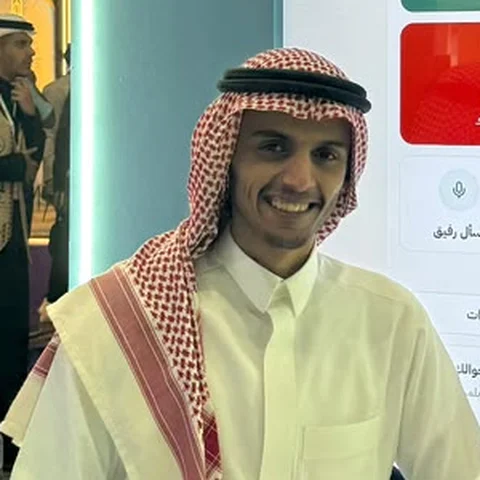
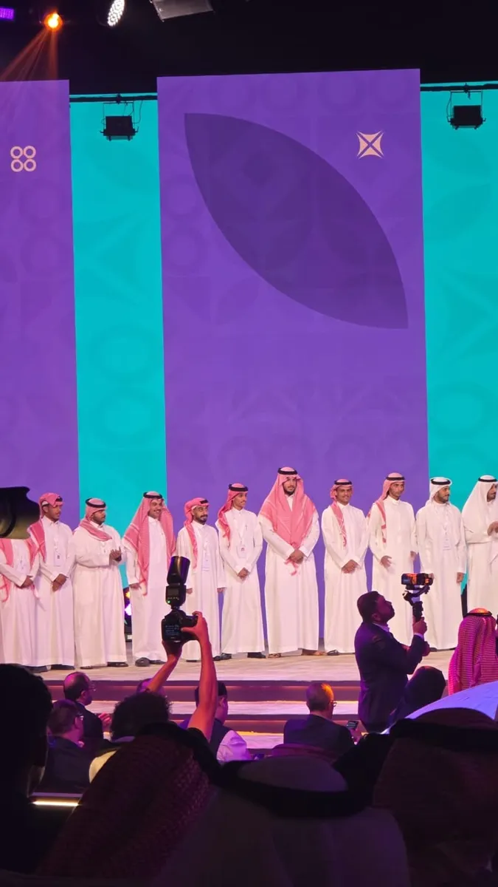
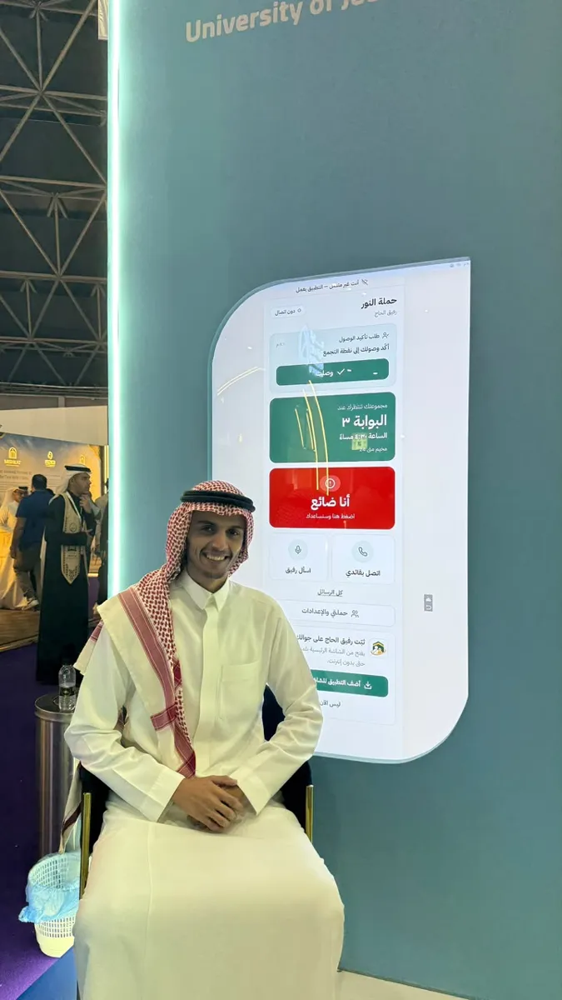
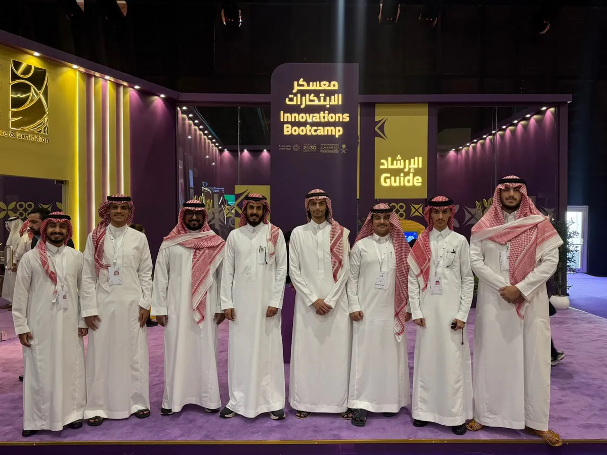
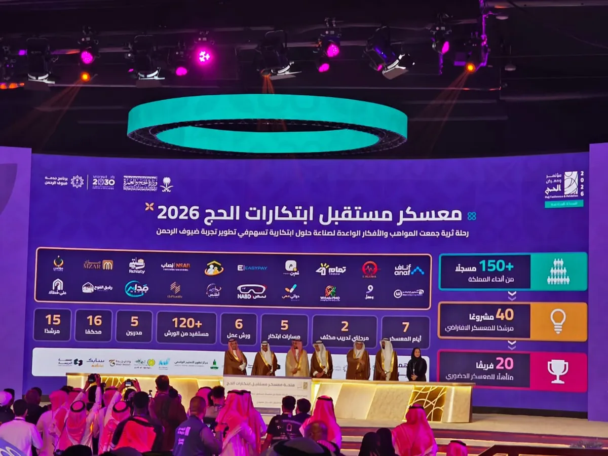
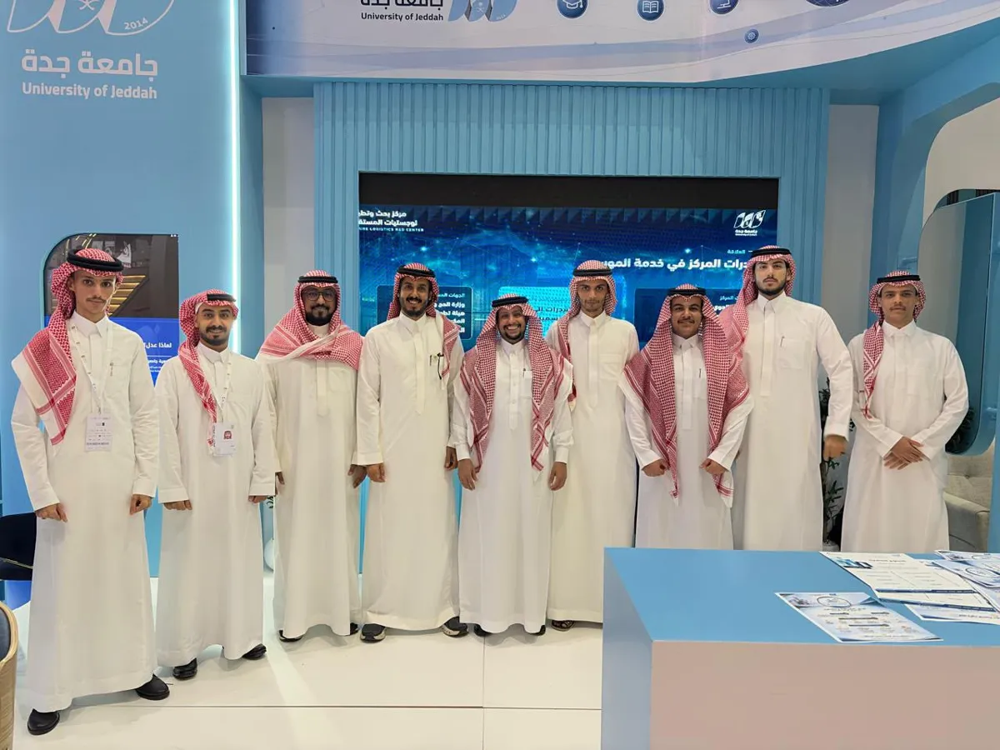

Architecture design
BizCo System
Architecture of a brokerage information system: architecturally significant requirements, quality-attribute scenarios, utility-tree prioritization, patterns, messaging, and trade-off analysis.
Backend development, software architecture, and systems that stay calm under load.

I like the parts of software engineering where structure matters: defining system boundaries, designing backend workflows, and integrating services cleanly. Most of my work is in Spring Boot Node.js Firebase and Docker, from a health-tech capstone to a peer-reviewed research platform.
Co-authored the paper and led the benchmark evaluation design: corpus curation, study methodology, metric selection, participant evaluation, and result analysis. Co-developed the platform in Node.js, Express, and SQLite.
An installable app that relays campaign-leader instructions to every pilgrim and guides them back to their group, even without internet. Built and tested during the camp at the Hajj Conference & Exhibition in Jeddah.





Backend and Firebase integration for a web app that generates personalized outing plans. API routes, validation, and Firestore workflows for activities, saved plans, users, and contact messages.
Architecture of a brokerage information system: architecturally significant requirements, quality-attribute scenarios, utility-tree prioritization, patterns, messaging, and trade-off analysis.
2023 · University of Jeddah. GPA 4.94/5.00 with Academic Excellence Certificates across consecutive semesters.
Sep 2025 · LinkedIn Learning
View certificate ↗2026 · Project in Three Minutes competition, University of Jeddah
Aug 2026 · Saudi Digital Academy. Agentic and multi-agent workflows with n8n.
View certificate ↗Oct 2026 · 41st IEEE/ACM International Conference on Automated Software Engineering
Nov 2026 · Rafiq Alhaj, chosen among 150+ teams, SAR 25,000 award
January 2027 · Arabic (native), English (upper-intermediate)
Available from January 2027, anywhere in Saudi Arabia. Main interest: backend development and software architecture.